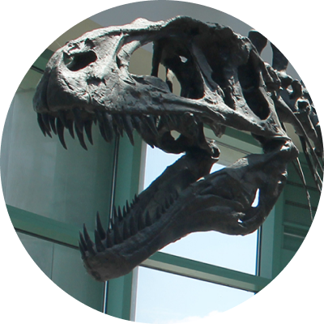
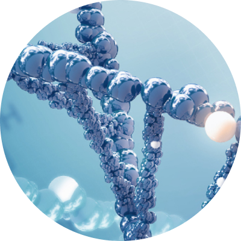
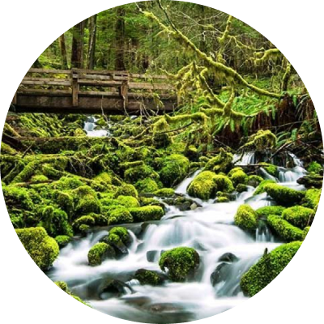
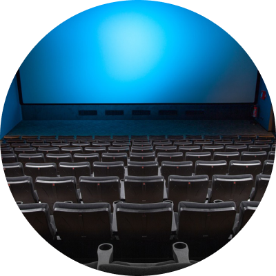

home > 박물관소개 > 박물관소개
관람안내
SEODAMUN MUSEUM OF NATURAL HISTORY
관람료
| 구분 | 금액 | 비고 | ||
|---|---|---|---|---|
| 개인 | 단체 | |||
| 어린이 | 3.000원 | 2.400원 | 5~12세 | |
| 청소년 군인 | 4.000원 | 3.200원 | 5~12세 | |
| 어른 | 7.000원 | 5.600원 | 19~64세 | |
| 영유아/노인 | 무료 | 무료 | 「장애인복지법」의 적용을 받는 등록장애인으로서 장애인등록증을 소지한 사람(장애정도가 심한 장애인의 경우에는 동행하는 보호자 1명 포함) | |
| 서대문구민 | 어린이 | 1.500원 | 1.500원 | |
| 청소년/군인 | 2.000원 | 2.000원 | ||
| 어른 | 3.500원 | 3.500원 | ||
- 사전예약 없이 현장 발권만 합니다. (인원제한 없음)
- 서대문구민은 주민등록 주소지가 서대문구로 기재된 신분증을 소지하여야 할인혜택 적용
- 신분증의 주소와 현 주소가 다를 시 3개월 이내 발급 한 등본 필수 지참
- 서대문구민으로 다둥이행복카드(3자녀 이상) 소지자 및 그 자녀는 관람료 무료
- 6개월 이내 재방문자가 유료 결제한 기존 입장권을 제시할 경우 관람료 20% 감면
- 연간회원은 회원증과 신분증 필수 지참
- 나이 계산 기준: 관람자 나이 = 관람연도-출생연도
관람 시간
- 서대문자연사박물관의 관람시간은 평일과 공휴일, 계절에 따라 다르게 운영됩니다.
- 방문하시기 전에 아래 관람시간을 확인하시기 바랍니다.
| 구분 | 관람시간 | 입장마감 시간 | |
|---|---|---|---|
| 3월~10월 | 평일 | 09:00 ~ 18:00 | 17시까지 가능 |
| 토요일·공휴일 | 09:00 ~ 19:00 | 18시까지 가능 | |
| 11월~2월 | 평일 | 09:00 ~ 17:00 | 16시까지 가능 |
| 토요일·공휴일 | 09:00 ~ 18:00 | 17시까지 가능 | |
-
- 휴관 안내
- 서대문자연사박물관 휴관일은 매주 월요일과 1월1일, 설날, 추석 당일입니다.
- 단, 월요일이 공휴일이면 다음날 휴관합니다.
관람 순서
-

- 01 중앙홀
- 아크로칸토사우루스와 프테라노돈 등이 전시되어있는 중앙홀에서 신비하고 다양한화석을 만나보세요
-
- 02 지구 환경관
- 우주의 먼 시절, 먼지와 가스가 모여 지구가 형성되었습니다. 이후 천문학적인 현상과 지질학적 과 정이 함께 작용하여 지구의 현재 모습이 완성되었습니다. 지구의 역사는 우주의 진화와 지구 내부의 활동에 의해 조금씩 바뀌어왔습니다. 지구 환경관에서는 이러한 지리학적과 천문학적 요소를 통해 우리의 지구의 역사를 전달합니다.
-

- 03 생명 진화관
- 우리는 수백억 년 동안 지구에서 생명이 진화하며 다양한 모습을 띄게 되었습니다. 생명 진화관은 이러한 진화 과정을 전시를 통해 설명하고 있습니다. 수많은 생물이 자연선택과 다양한 환경 요인에 의해 변화하며 새로운 종이 형성되었습니다. 이는 생명체들 이 지구 위에서 서로 다른 생태적 역할을 하며 공존하는 다양성을 형성하는 과정입니다.
-

- 04 인간과 자연관
- 인간과 자연의 상호작용을 탐구하며, 환경 보호의 필요성을 강조합니다. 전시는 지구의 생태계와 인간 활동의 영향을 시각적으로 보여줍니다. 우리의 선택이 자연과 생태계에 미치는 영향을 고찰하며, 지속 가능한 미래를 위한 행동을 촉구합니다. 이를 통해 인간과 자연 사이의 균형을 찾는 방법에 대해 생각합니다.
-

- 05 시청각실
- 시청각 실에서는 소리와 영상을 통해 다양한 주제를 전달합니다. 다양한 전시물을 통해 관람객들에게 인상적인 경험을 선사합니다. 문화와 예술, 과학 등 다양한 분야의 전시를 개최하여 관람객들에게 다양한 경험을 제공합니다. 시청각 실은 사람들에게 새로운 지식과 감동을 안겨줍니다.